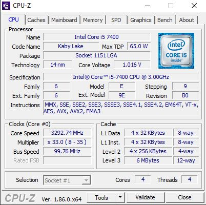
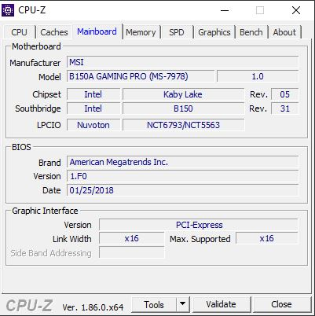
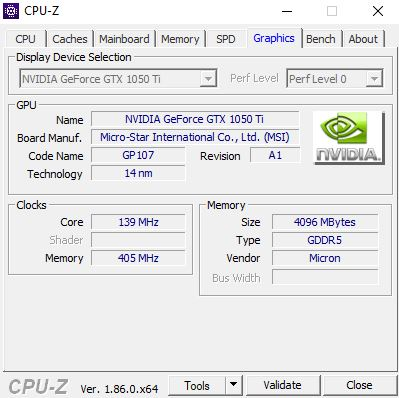

Czytanie dokumentacji technicznej komputera. Posługiwanie się terminologią zawodową w języku angielskim.
W skład dokumentacji technicznej komputera może wchodzić:
- specyfikacja sprzętu komputerowego
- audyt sprzetu
- audyt informatyczny
- audyt legalności
- audyt oprogramowania
- regulamin, lista haseł
Dokumentacja techniczna to zbiór dokumentów pozwalających na stworzenie, wyceny, modernizacji, naprawy lub reklamacji zestawu komputerowego. Audyt to proces, w którym zbiera się i ocenia materiały dowodowe w celu sprawdzenia, czy systemy informatyczne i związane z nimi zasoby chronią majątek. Kontroluje też utrzymanie integralności danych i systemów.
Specyfikacja mojego komputera:




Język Angielski w informatyce. Moim zdaniem jest potrzebny bo we wszystkich krajach bedzie tak samo i każdy bedzie wiedział np. o jaką część komputera chodzi. W informatyce występuja także angielskie skróty takie jak: CPU (ang. central processing unit czyli procesor) , GPU (ang. graphics processing unit czyli procesor graficzny).